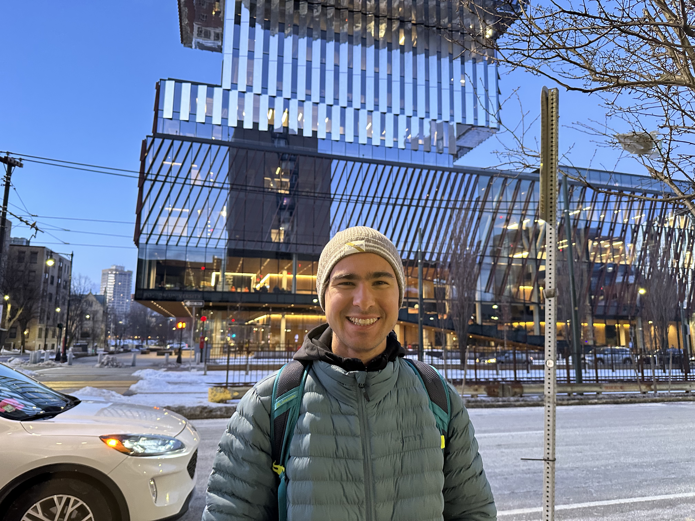

hi, i’m
Graduate researcher in multimodal AI, team science, and human-AI collaboration.
I am currently a graduate researcher at the Northwestern Institute on Complex Systems (NICO), working with Dr. Evey Huang and Prof. Brian Uzzi on multimodal systems for studying how teams coordinate, communicate, and build shared understanding over time.
My current work focuses on video, audio, and transcript analysis, LLM-assisted annotation, and computational tools for measuring collaboration in real-world meetings.
I earned my B.S. in Statistics and Data Science from UCLA. Outside of research, I’m usually bouldering, training for distance running, taking portraits, or cooking. If you're thinking about where multimodal AI can actually help with real-world collaboration, let's talk.

Max Chalekson